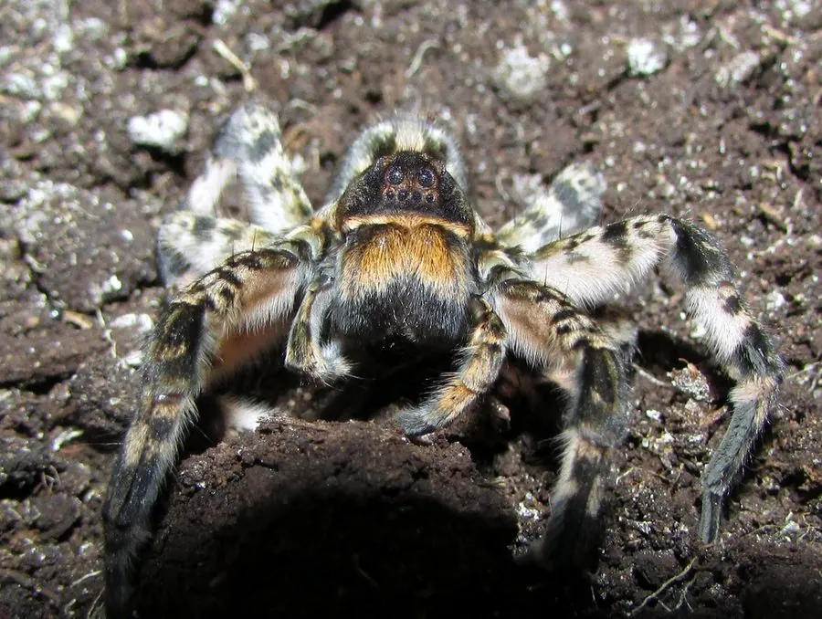

蛛形动物 · 动物界
穴居狼蛛 Lycosa singoriensis

分布于中国新疆等地的大型狼蛛，雌蛛体长可超过 3 厘米，毒性较强，被咬后会剧痛红肿，需避免接触。
- 分类
- 门节肢动物门纲蛛形纲目蜘蛛目科狼蛛科属狼蛛属
- 栖息环境
- 荒漠、半荒漠、草原与农田边缘，多自行挖洞居住
- 地理分布
- 中国新疆及中亚地区的干旱与半干旱地带
- 保护级别
- IUCN 暂无评估；中国未列入国家重点保护名录
物种志
穴居狼蛛雌蛛体长 25–35 毫米，雄蛛 18–25 毫米，是体型较大的狼蛛。它头胸部呈黑褐色，背面有浅色纵纹，腹部灰褐色并带斑纹，八足粗壮多毛；不结捕猎网，而是栖息在自己挖掘的洞穴中，洞口常覆有丝网，白天潜伏，夜间出洞伏击经过的昆虫和其他小型动物。
它主要分布于中国新疆的荒漠、半荒漠与农田边缘，也见于中亚地区，当地民间对其较为警惕。雌蛛把卵囊挂在纺器上随身携带，幼蛛孵化后会爬到母蛛背上生活一段时间。穴居狼蛛毒性较强，被咬后局部会出现明显疼痛、红肿，少数人可能发生过敏反应，在野外活动时应穿长裤和高帮鞋、避免徒手翻动石块。它捕食蝗虫等害虫，对农业有一定益处，目前尚未列入保护名录。
形态与习性
- 食性昆虫及其他小型无脊椎动物，也捕食小型蜥蜴
- 体长雌蛛 25–35 mm，雄蛛 18–25 mm
- 寿命约 2–3 年
- 繁殖卵生，雌蛛携带卵囊，幼蛛孵出后爬上母背
- 活动节律夜行性，白天藏于洞穴
- 毒性毒性较强，被咬可致剧痛红肿，需避免接触并及时就医
趣味知识
- 穴居狼蛛会把卵囊挂在尾部随身携带，幼蛛孵化后还会爬到母蛛背上。
- 它不结捕猎网，靠洞穴和伏击捕食，洞口常有丝网覆盖。
- 在新疆民间，人们对穴居狼蛛颇为忌惮，被咬后应尽快就医处理。